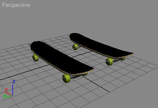
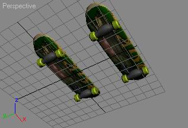
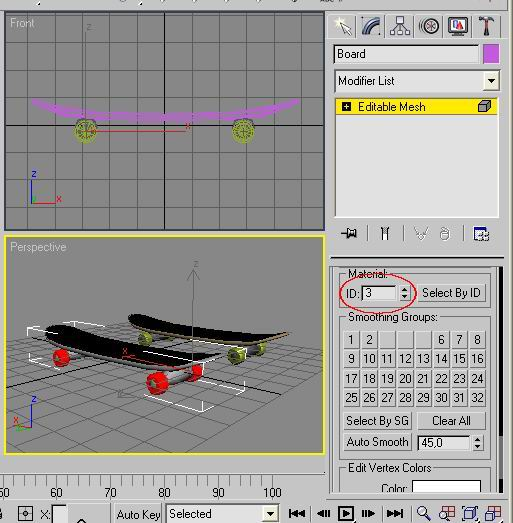
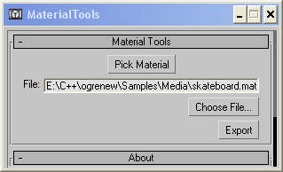
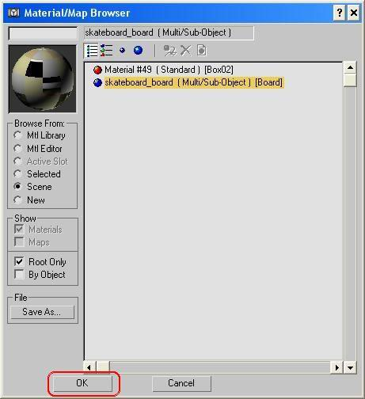

Tutorial: Exporting meshes from 3dsmax 5
This tutorial shows how to export a skateboard from 3D studio Max 5. You will export a mesh made up of several submeshes and
its assigned material.
Introduction
First, open the file "skateboard_1.max" that you can find in this zip file.
Copy the png file to "C:\" directory or change the path in the material editor. You should also copy it to your OGRE Media directory.
You can see 2 boards which have been cloned. They are made up of a board that have been mapped with UVW unwrap,
4 wheels and 2 trucks.
 
Create one object with submeshes
- Select the board (whose name is "board") which is at (0,0,0) and convert it to an editable mesh.
Attach the wheels and the trucks.
- As you can see, texture mapping has changed, we must create a MultiMaterial and assign material ids to submeshes.
In the material editor (press "M"), assign the multiMaterial to the board, and in the element subobject mode,
choose material Id 1 for the board, 2 for the wheels and 3 for the trucks.

- That's all, the mesh is ready to be exported.
Run the mesh exporter
The script allows you to run XMLConverter after exporting. This is set in the OgreScript.ini file.
Here is an example:
[Directories]
XMLConverterPath=e:\C++\ogrenew\Tools\XMLConverter\bin\Debug
MediaPath=E:\C++\ogrenew\Samples\Media
[Exe]
XMLConverterExe=OgreXMLconverter.exe
[Settings]
lastFile=e:\C++\ogrenew\Tools\XMLConverter\bin\Debug\bbb
lastAnimName=walk
lastMaterialFile=E:\C++\ogrenew\Samples\Media\3ds.material
[Tools]
runXMLConverter=no
As you can see, settings are saved, so you avoid to write again and again the same output files and animation name.
To be able to run XMLConverter, change the last line as:
runXMLConverter=yes
and set up your directories.
Nota:you may have to change XMLConverterExe to another name (to the former XMLConverter), there will not be any warnings if a path or the exe file contains errors.
Now choose the board, check the "export mesh" checkbox and press the export button.
Nota: Using the log - When there is no submesh:
Open the Maxscript Listener ("MaxScript/Maxscript Listener" or "F11"), You should see a log.
You should verify that there is the number of submeshes you expect, especially when you have not
any submesh. 3dsmax sets 6 material Id when a mesh is created, I think. So if you see lots of submeshes,
just set the material ID in subobject mode.
Nota: material names :
As you can see if you open the .mesh.xml file which has been written, submesh material names are materialname/*
where * is a sub material name. If you forget this, you may have an "material not found" error at runtime.
So our materials are called: skateboard_board/board, skateboard_board/wheels, skateboard_board/trucks.
Here is the material file you have to write (in any .material file in the Media directory)
material skateboard_board/board_#132
{
technique
{
pass
{
ambient 0.588 0.588 0.588
diffuse 0.588 0.588 0.588
specular 0.9 0.9 0.9 0.0
emissive 0.0 0.0 0.0
texture_unit
{
texture skateboard.png
}
}
}
}
material skateboard_board/wheels
{
technique
{
pass
{
ambient 0.796079 0.780392 0.588235
diffuse 0.796079 0.780392 0.588235
specular 0.9 0.9 0.9 0.0
emissive 0.0 0.0 0.0
}
}
}
material skateboard_board/trucks
{
technique
{
pass
{
ambient 0.737255 0.737255 0.737255
diffuse 0.737255 0.737255 0.737255
specular 0.9 0.9 0.9 0.0
emissive 0.0 0.0 0.0
}
}
}
But, read the next section before doing this ;) .
Run the material exporter
No run the material exporter in the Ogre Toolbar. (If you don't find the material exporter button, have a look
here)
It can only (but it's sufficient) export MultiMaterials and Standard Materials.
- It adds /* to material names.
- It retrieves the Diffuse map of submaterials, or if it is undefined, it uses ambient, diffuse, etc. colors.
You should see the following window:

Click on "Pick material", choose Scene in the right panel, and choose the snowboard_board material.

Click on 'Ok' button in order to select the material you want to export.
Select instance in the popup,
Choose an output filename (in the OGRE Media directory),
Press the Export button.
There is an other button which allow you to export all the materials used in the scene.
That's all ! Have fun with this exporter !
Return to homepage
If you have seen any errors or have any suggestions, mail me at mallard@iie.cnam.fr.